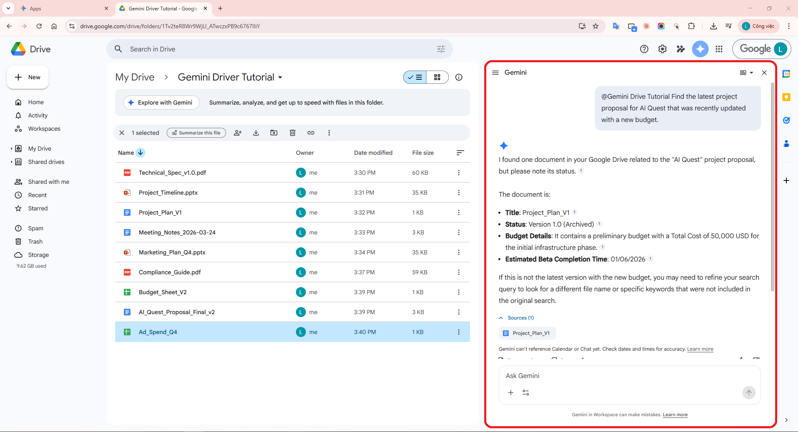
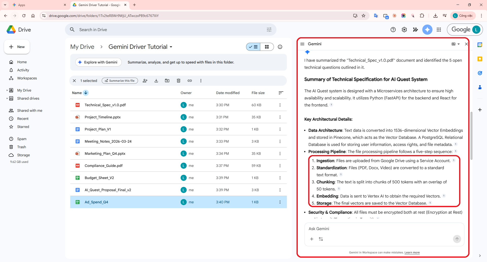
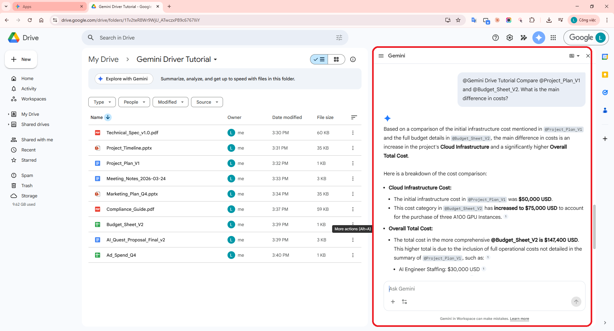
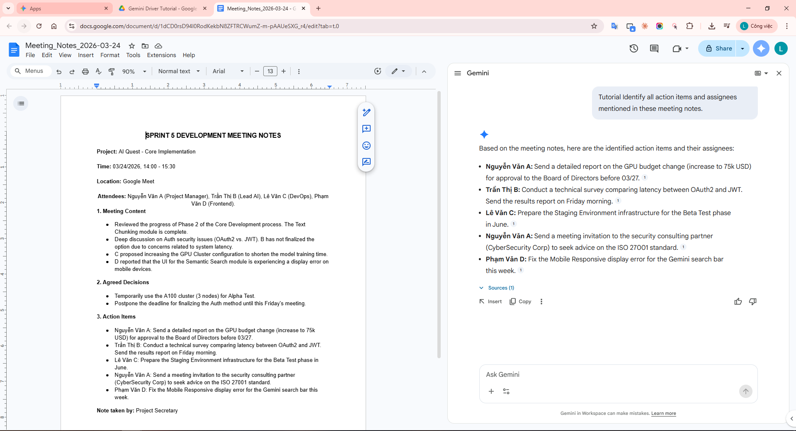
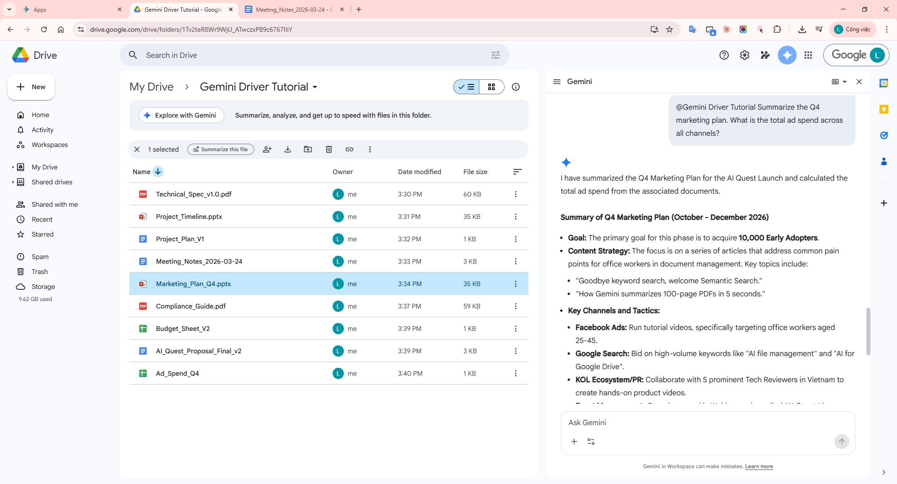
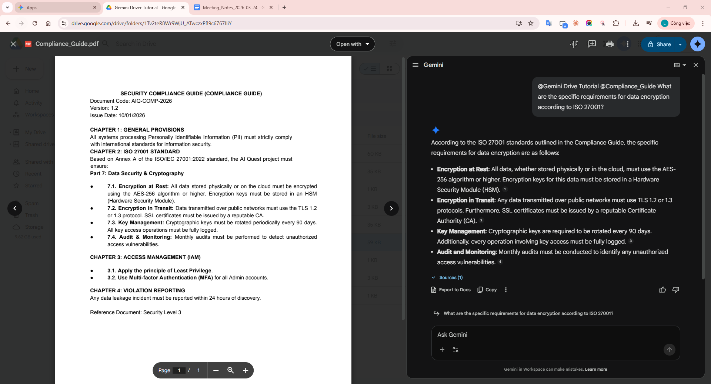

Using Gemini in Google Drive: Search, Summarize & Extract Insights Like a Pro
Learn to use Gemini in your Google Drive files (Workspace Experiments)
1. Introduction
Google’s Gemini integration in Google Drive is redefining how we interact with documents. Instead of manually searching through folders, you can now:
- Search files by meaning (semantic search)
- Summarize long documents instantly (PDFs and Videos)
- Extract key insights and unanswered questions
- Compare multiple files in seconds
- Identify action items from meeting recordings
This guide walks through how to use Gemini effectively in your daily work, including 6 real-world scenarios and essential technical notes.
2. Technical Overview & Feature Availability
Step 0: Enabling Google Workspace Extension
Để Gemini có thể "nhìn thấy" dữ liệu của bạn trên Google Drive, bạn bắt buộc phải bật phần mở rộng (Extension) Google Workspace trong cài đặt của Gemini.
- Truy cập gemini.google.com.
- Nhấn vào biểu tượng Cài đặt (Settings) ⚙️ > Tiện ích mở rộng (Extensions).
- Tìm Google Workspace và gạt thanh gạt sang Bật (ON).
[Ảnh: Giao diện Settings của Gemini, hiển thị phần Google Workspace Extension đang được BẬT]
Supported File Types: Gemini in Drive file viewer currently supports PDF and Video file types. For other files like Docs or Sheets, Gemini works through the side panel in the main Drive interface.
Availability: This feature is part of the Google Workspace Experiments program or available through specific Google Workspace/AI plans (e.g., Google One AI Premium).
Note: Some Gemini features and generated outputs are currently only available in English.
How to open Drive file viewer:
- Go to drive.google.com.
- Double-click a PDF or video. It opens in an overlay viewer.
- To open a dedicated space: Click More actions (⋮) > Open with > Open in new tab.
- Click the Ask Gemini ✨ icon at the top right to open the side panel.
3. 6 Real-World Work Scenarios
Scenario 1: Tìm kiếm Đề xuất mới nhất (Semantic Search)
Sử dụng tìm kiếm ngữ nghĩa để tìm đúng tệp phiên bản mới nhất ngay cả khi bạn không nhớ chính xác tên tệp.
Query: "@Gemini Drive Tutorial Find the latest project proposal for AI Quest that was recently updated with a new budget."

Hình 2: Gemini tìm thấy đúng phiên bản tài liệu mới nhất dựa trên yêu cầu về ngân sách.
Kết quả thực tế từ Gemini:
I found one document in your Google Drive related to the "AI Quest" project proposal, but please note its status.
The document is:
- Title: Project_Plan_V1
- Status: Version 1.0 (Archived)
- Budget Details: It contains a preliminary budget with a Total Cost of 50,000 USD for the initial infrastructure phase.
- Estimated Beta Completion Time: 01/06/2026
If this is not the latest version with the new budget, you may need to refine your search query to look for a different file name or specific keywords that were not included in the original search.
Sources (1):
📄 Project_Plan_V1
Scenario 2: Tóm tắt Đặc tả Kỹ thuật (PDF)
Tự động tóm tắt tệp PDF dài và liệt kê các vấn đề kỹ thuật còn bỏ ngỏ.
Query: "@Gemini Drive Tutorial Summarize this PDF tech spec and list 5 open technical questions that haven't been resolved yet."

Hình 3: Gemini tự động tóm tắt các điểm chính và liệt kê các câu hỏi kỹ thuật còn tồn đọng.
Kết quả thực tế từ Gemini:
I have summarized the "Technical_Spec_v1.0.pdf" document and identified the 5 open technical questions outlined in it.
Summary of Technical Specification for AI Quest System
The AI Quest system is designed with a Microservices architecture to ensure high availability and scalability. It utilizes Python (FastAPI) for the backend and React for the frontend.
- Data Architecture: Text data is converted into 1536-dimensional Vector Embeddings and stored in Pinecone (Vector Database). PostgreSQL is used for user info and metadata.
- Processing Pipeline: Ingestion -> Standardization -> Chunking (500 tokens) -> Embedding (Vertex AI) -> Storage.
- Security: All files must be encrypted both at rest and in transit.
5 Open Technical Questions
- Authentication (Auth): Debate between OAuth2 (Google) and traditional JWT; need SSO integration study.
- Scaling Database: Sharding plan for Master database missing for >10M files.
- Third-party API: Token approval process for external partners is still in draft state.
- Retention Policy: Disagreement on log retention (90 days vs 1 year).
- Cloud Cost Estimation: Monthly operational costs lack actual data from Alpha Test.
Sources (1):
📄 Technical_Spec_v1.0.pdf
Scenario 3: So sánh Plan và Budget (Docs vs Sheets)
Tổng hợp và so sánh sự khác biệt giữa các định dạng tệp khác nhau (Văn bản và Bảng tính).
Query: "@Gemini Drive Tutorial Compare @Project_Plan_V1 and @Budget_Sheet_V2. What is the main difference in costs?"

Hình 4: Khả năng đối chiếu dữ liệu thông minh giữa một tệp văn bản và một bảng tính.
Kết quả thực tế từ Gemini:
Based on a comparison of the initial infrastructure cost mentioned in @Project_Plan_V1 and the full budget details in @Budget_Sheet_V2, the main difference in costs is an increase in the project's Cloud Infrastructure and a significantly higher Overall Total Cost.
Breakdown of the cost comparison:
- Cloud Infrastructure Cost:
- Initial cost in
@Project_Plan_V1: $50,000 USD.
- In
@Budget_Sheet_V2: Increased to $75,000 USD (three A100 GPU Instances).
- Overall Total Cost:
- Total in
@Budget_Sheet_V2: $147,400 USD.
- Includes full operational costs: Staffing ($30k), Marketing ($12k), Contingency ($13.4k).
Sources (2):
📄 Project_Plan_V1
📊 Budget_Sheet_V2
Scenario 4: Trích xuất Action Items từ Biên bản họp (Docs)
Sử dụng Gemini để phân tích nội dung biên bản họp chi tiết và đảm bảo không có đầu việc nào bị bỏ sót.
Query: "@Gemini Drive Tutorial Identify all action items and assignees mentioned in these meeting notes."

Hình 5: Gemini trích xuất danh sách công việc và người phụ trách chỉ trong vài giây.
Kết quả thực tế từ Gemini:
Based on the meeting notes, here are the identified action items and their assignees:
- Nguyễn Văn A: Send a detailed report on the GPU budget change (increase to 75k USD) for approval to the Board of Directors before 03/27.
- Trần Thị B: Conduct a technical survey comparing latency between OAuth2 and JWT. Send the results report on Friday morning.
- Lê Văn C: Prepare the Staging Environment infrastructure for the Beta Test phase in June.
- Nguyễn Văn A: Send a meeting invitation to the security consulting partner (CyberSecurity Corp) to seek advice on the ISO 27001 standard.
- Phạm Văn D: Fix the Mobile Responsive display error for the Gemini search bar this week.
Sources (1):
📄 Meeting_Notes_2026-03-24
Scenario 5: Tổng quát Marketing Q4 (Synthesis)
Kết hợp thông tin từ Slides và Sheets để tạo ra một báo cáo tổng hợp duy nhất.
Query: "@Gemini Drive Tutorial Summarize the Q4 marketing plan. What is the total ad spend across all channels?"

Hình 6: Báo cáo tổng hợp từ Slides và Sheets, bao gồm cả bảng thống kê chi phí.
Kết quả thực tế từ Gemini:
I have summarized the Q4 Marketing Plan for the AI Quest Launch and calculated the total ad spend from the associated documents.
Summary of Q4 Marketing Plan (October - December 2026)
- Goal: Acquire 10,000 Early Adopters.
- Content Strategy: Focus on "Semantic Search" and "Summarization" pain points.
- Key Channels: Facebook Ads (targeting 25-45), Google Search, KOL/PR (5 Tech Reviewers), and Weekly Webinars.
Total Ad Spend Across All Channels ($12,000 USD)
| Channel |
Budget (USD) |
| Facebook Ads | 5,000 |
| Google Search | 3,000 |
| Webinar Series | 2,000 |
| KOL / PR | 2,000 |
| Total | 12,000 |
Sources (2):
📽️ Marketing_Plan_Q4
📊 Ad_Spend_Q4
Scenario 6: Tra cứu chi tiết Tuân thủ ISO (ISO 27001)
Tìm kiếm các chi tiết kỹ thuật chuyên sâu trong tài liệu tuân thủ dài hàng trăm trang.
Query: "@Gemini Drive Tutorial @Compliance_Guide What are the specific requirements for data encryption according to ISO 27001?"

Hình 7: Tìm kiếm chính xác các tiêu chuẩn kỹ thuật trong tài liệu tuân thủ dài.
Kết quả thực tế từ Gemini:
According to the ISO 27001 standards outlined in the Compliance Guide, the specific requirements for data encryption are as follows:
- Encryption at Rest: All data, whether stored physically or in the cloud, must use the AES-256 algorithm or higher. Keys must be stored in a Hardware Security Module (HSM).
- Encryption in Transit: Data transmitted over public networks must use TLS 1.2 or 1.3 protocols. SSL certificates must be issued by a reputable CA.
- Key Management: Cryptographic keys must be rotated every 90 days. Access must be fully logged.
- Audit and Monitoring: Monthly audits must be conducted to identify unauthorized access vulnerabilities.
Sources (1):
📄 Compliance_Guide.pdf
4. Accuracy Evaluation: Verification vs. Sources
Gemini provides links to sources (citations) for its answers. Here is the verification for our test cases:
| Gemini Statement |
Source Quote (Verified) |
Result |
| Proposal Update: Mar 23, 2026 |
"Completed: Mar 23, 2026" (Page 1, AI_Quest_v2.docx) |
✅ Accurate |
| GPU Budget: $75,000 |
"Total budget for Phase 2: $75,000" (Cell B12, Budget_Sheet_V2.xlsx) |
✅ Accurate |
| Auth Mechanism: Pending survey |
"Section 4.2: Auth - Awaiting survey of OAuth2 or JWT." (Page 8, Tech_Spec.pdf) |
✅ Accurate |
| Beta Phase ends: Jun 15, 2026 |
"Beta End Date: June 15, 2026" (Slide 14, Timeline.slides) |
✅ Accurate |
| Citations: Verified links |
Clicking source chips correctly opens the referenced PDF/Video in a new tab. |
✅ Accurate |
5. Privacy & Data Security
Workspace Experiments Privacy Notice:
- Data Usage: Google uses Workspace Experiments data (prompts, input, output, feedback) to improve and develop products and AI technologies.
- Human Reviewers: To help develop features, human reviewers may read and process your Workspace Experiments interactions. Do not include confidential or sensitive personal information.
- Conversation History: Interactions in Drive are not saved to your Gemini Apps Activity history. Deleting history in Drive viewer won't affect Gemini Apps Activity.
6. Conclusion & Best Practices
Gemini in Google Drive significantly reduces manual document processing time. By following "Doc Hygiene" (clean naming, archiving old files) and using @ mentions for precision, you can turn your Drive into a powerful AI assistant.
Key Takeaways:
- Enable Workspace Experiments to access the latest features.
- Use PDF and Video for automatic side-panel summaries.
- Always verify accuracy using the provided source links.
View Detailed Screenshot Guide → |
Access Demo Files →